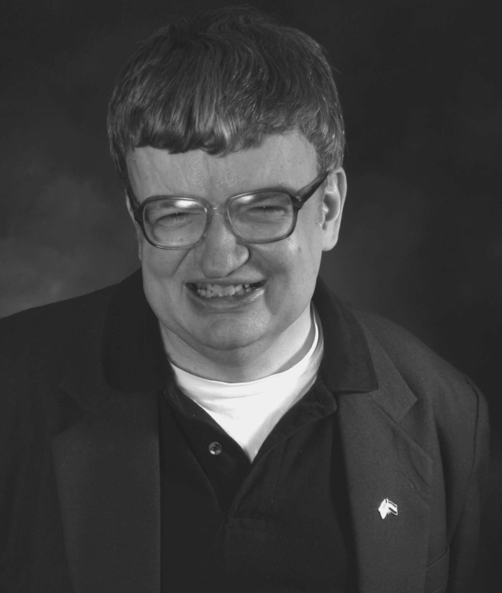

一度人们以为自闭症总是跟学习障碍，或者精神障碍联系在一起，而这两种障碍总暗示大脑有病理性改变而导致低智商。近来的研究已改变了这一看法。现在自闭症谱系的情形完全包括了那些即使用标准智力测试来评估也没有智力缺陷的情况。目前确诊的自闭症中，低智商大约占到50%的病例，另外50%则拥有平均甚至极高的智力。
学习困难合并自闭症
严重的智力障碍是由于严重的大脑异常，而这几乎肯定也会限制情感和社交能力。这是大致影响。然而，大脑异常也有些特别的影响。在自闭症中可以看出这个特别影响。这里情感和社交能力完全不按常理，也远低于其他认知能力。大卫的情况就是很好的例证。然而，如果所有能力都偏低，就几乎不可能有一种能力显得特别低了。
非常神奇的是，不是所有有普遍学习障碍或者精神障碍的孩子都有社交困难。在有些病例，尤其是威廉姆斯综合征中，社交兴趣和能力还远远优于其他能力。你能感觉到有回应的交流。这些孩子会先进行社交接触，也试图让你参与其中。威廉姆斯综合征的个体，即使是小孩子，也会凝视他人，也会发自心底地与他人互动，而且会争取保持和引导他人的兴趣。这些通常也是唐氏综合征的孩子的特点。很明显，这些病症也有其独特的优势和缺陷，跟自闭症不同。
自闭症合并智力障碍的孩子是什么样的？他们仍然是难解之谜，而且给家长和老师们带来很多挑战。他们通常开口讲话很晚，甚至从不说话。他们看起来常常被封锁在重复性行为中，比如来回摇晃，也会被封锁在极难打破的惯例中。他们更可能患有另外的神经疾病，特别是癫痫。他们也可能长得不太好看，还很可能表现出非常不讨喜的行为。家长和老师们的应对办法已用到极致。这些孩子长大后仍然极难照顾。令人难过的是，人们讨论自闭症情形时往往会忽略他们。大多数人想到的自闭症都是高功能的，而不是低功能的状况。然而这才是自闭症最棘手的那一面。急切需要研究来探寻这些个体大脑中究竟出了什么问题，以及如何去改善他们的生活状况。
之所以提出高功能自闭症这个术语，是为了把它从过去人们更熟悉的情形，即缄默孤僻的孩子当中区分出来。高功能的孩子很可能实现补偿性学习。他们的智力资源能使他们发展出替代手段来学习社交技能。他们可以仔细观察社交规则，但仍不会融入复杂的社交世界中去。只要教学方式充分考虑到他们特殊的长处和兴趣，他们就能做到在科目学习上成绩突出。然而，他们的自闭症所具有的核心特征并不一定表现得更温和。超乎寻常的智力水平使得他们能取得优异的职业成就，但很遗憾不会改善他们独立生活的能力。很多聪明的高功能人士非常艰难地应对着日常生活的简单需求。
经典自闭症
坎纳首次提出自闭症时，他所描绘的其实是现在自闭症谱系中的一小类孩子。然而他发现了每个医生都能辨认的一整套标志和症状。这些孩子显得非常疏离。如果会讲话，他们多半使用刻板习得的短语和词汇。他们不仅表现出简单的重复性运动，比如拍手、来回摇晃，还会表现出更复杂、详细的刻板行为。他们自己开发出复杂的机械程序，然后忠实地一再重复。他们的特殊才能更令人惊叹，比如拥有超乎寻常的记忆力。
这类经典自闭症孩子的一个重要特点就是他是个孩子—坎纳提到这个概念时，人们对于这类人的成年生活几乎一无所知。这样的孩子是个偶像，美丽而遥远的孩子。人们对他们的高智商印象深刻，因为普通孩子达不到这样的智力水平。但，呜呼，这只是个幻象而已。随着自闭症孩子长大，幻象逐渐褪去。
自闭症孩子长大了
儿童发育会有很多惊喜。一个孩子可能长大了就没问题了；一个发育迟缓的孩子可能会追赶上来。但更可能的情形是，有问题的孩子会成长为有问题的成人。孩提时的发育迟缓通常会成为终身的学习障碍。
首映于1989年的电影《雨人》（Rainman），在提高公众对自闭症的意识上产生了巨大的影响。达斯汀·霍夫曼饰演的主人公就是个自闭症人士，结合了数位真实的原型。他的很多特征是基于金·皮克，他由于异常的记忆力而出名，被称为“人工谷歌”。这是自闭症成人第一次成为关注焦点。在此之前，只有专攻儿童研究方面的专家，即儿童精神病学家、儿童心理学家、语言治疗师及特殊教育者，这些人当中的一小部分知道这个疾病并能诊断出来。主要接触成人的那些神经学家、精神病学家和心理学家们对这种状况仍然一无所知。过了一段时间，人们才惊恐地意识到，那些住在精神疾病和精神障碍机构中的很多成人可能是患了自闭症。
达斯汀·霍夫曼在有条不紊为电影作准备的过程中，近距离观察自闭症成人的真实状态，模仿他们。他饰演的自闭症人士既古怪又可爱。他看起来有精神障碍，行为也是如此，但拥有令人称奇的本领。他极其天真，对由汤姆·克鲁斯饰演的狡猾弟弟的欺瞒诈骗一无所知。然而他能够读一遍便记住一本电话簿上所有的地址，也恰好能用他神奇的记忆力在拉斯维加斯赢得牌局。最让人觉得可爱的是主人公的完全不自知。他不知道自己的能力有多神奇，不会考虑他的刻板行为方式会给别人带来怎样的尴尬和困境，且毫不质疑地全盘接受别人对他的刁难。这是自闭症的全新形象，首次进入公众视线便迅速赢得同情。
雨人是一个自闭症大使。但并非所有自闭症谱系障碍人士都是可爱的拥有非凡能力的古怪形象。甚至可以说，相去甚远。很多人非常难以共同生活，很多人还有其他问题。要说明的是，只有10%的自闭症谱系障碍人士天赋极高，令人震撼。
当陌生人以为他们内心都是天才时，另外那90%的家庭自然非常恼怒。然而，也必须指出，在这另外的90%的人里面，很多人也有异乎寻常的显著才能，虽然这些才能达不到令人震撼的程度。
众多的自传式描述给我们提供了在自闭症谱系情形中成长的真实景象。它们对自闭症青少年有什么描述？在很多方面，他/她甚至意识不到成为青少年意味着什么。他们并不执著地坚持要自己在同伴中看起来跟别人一样，要穿戴一样的衣服和饰品。自闭症少年们保留了其他人看来太幼稚的很多特征。然而他们也有正常的性冲动。有些人会意识到那么一点他们的与众不同。他们与同伴相比特立独行。有可能他们根本不在乎自己在旁人心目中的形象，而这可能正是他们看起来更不正常的原因。现在你注意到他们步态笨拙，面无表情。当然了，这令人难过，但对他们却有所帮助，因为这对其他人来说是有问题的明显标志。
图2a 达斯汀·霍夫曼和汤姆·克鲁斯在电影《雨人》（1989）中饰演一对兄弟。这部电影唤起人们对患有自闭症但拥有非凡天赋的成人（天才综合征）的意识

图2b 金·皮克给达斯汀·霍夫曼刻画“雨人”的形象提供了灵感。皮克能一小时读完一本书，一字不差地记住整本书。他被称为“人工谷歌”
越来越适应
第一手的资料让我们窥见令人着迷的自闭症世界。在像杰西卡·金斯利这样的专业出版公司和网络上，都能找到越来越多的资料。这些资料显示很多困难能被克服。补偿性学习有时能带来非常成功的生活，有时还包括婚姻和孩子。这一点非常鼓舞人心，因为社交洞察力的基础问题从来不会真正消失。根据这些作者的说法，他们必须一直不断地与这些问题斗争。
自闭症作者中最著名的一位是坦普尔·格兰丁，她写了很多关于自己生平的书，回顾了自己五十多年的经历。这里摘录一段她《图像思维》（Thinking in Pictures，温蒂奇出版社增补版，2006，同时发布于坦普尔·格兰丁的网站，很容易用谷歌搜到）里的话：
这段自我评价与一个有自闭症谱系障碍的人最近跟我讲的话不谋而合：“现在越来越多的场合我只需要识别而不需要思考了。”
我们所知当中很大的一条鸿沟就是我们对自闭症老人的情况知之甚少。他们的寿命是否和别人都一样长？不管有没有得自闭症，身患智力缺陷的人通常寿命偏短，但原因可能各种各样。令人难过的是，原因之一是他们可能不会告知别人他们身上原本可以治愈的健康问题。并且，他们的重复性行为可能对身体有害，比如说喝过量的水。另一方面，当他们老去，他们的生活变得更重复，更刻板。很多老人会见到他们的老伴和朋友先离开，不得不习惯孤独，这本身对我们大多数人来说就难以适应。但如果你从来没有过朋友，会不会反而容易点呢？